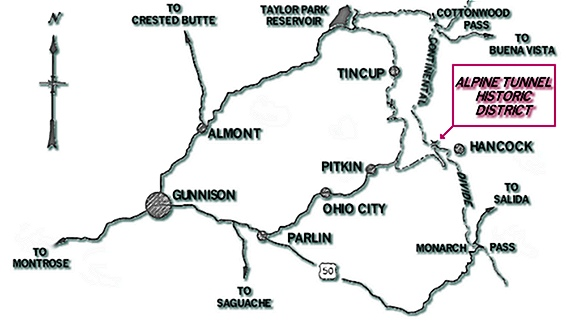
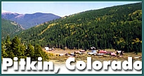

| The Alpine Tunnel Historic District consists of a two hundred foot wide right of way along thirteen miles of original Denver, South Park and Pacific railbed between the town sites of Quartz (in Gunnison County) and Hancock (in Chaffee County). The District consists of property located on the Gunnison National Forest and the San Isabel National Forest as well as two separate parcels of private land. |
| This Alpine Tunnel Historic District project is sponsored by the Gunnison County Lodging Tax Panel, the Alpine Tunnel Historic Association, and the U.S. Forest Service. |

|
|
|
|
|
|
|
|
|
 Visit Pitkin, Colorado |
Ray Rossman - U.S. Forest Service
216 N. Colorado
Gunnison, CO 81230
(970) 641-0471
or
Alpine Tunnel Association
This Web page is maintained and hosted by: Mark L. Evans
and is a service of The Narrow Gauge Circle
All original materials, text, and digital images Copyright 1995-2015
Alpine Tunnel historic Association
All rights reserved.